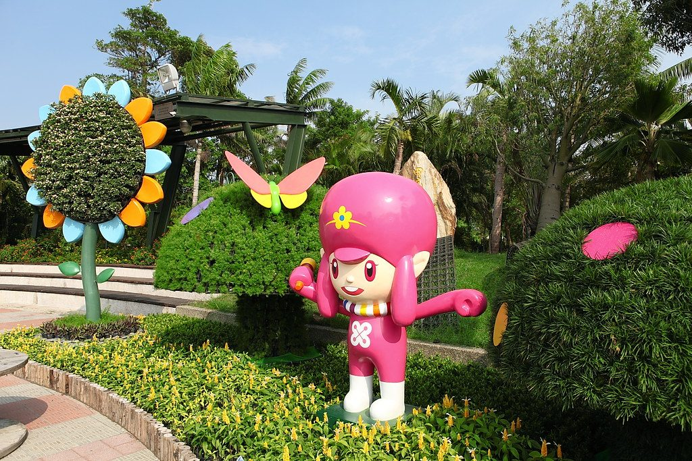
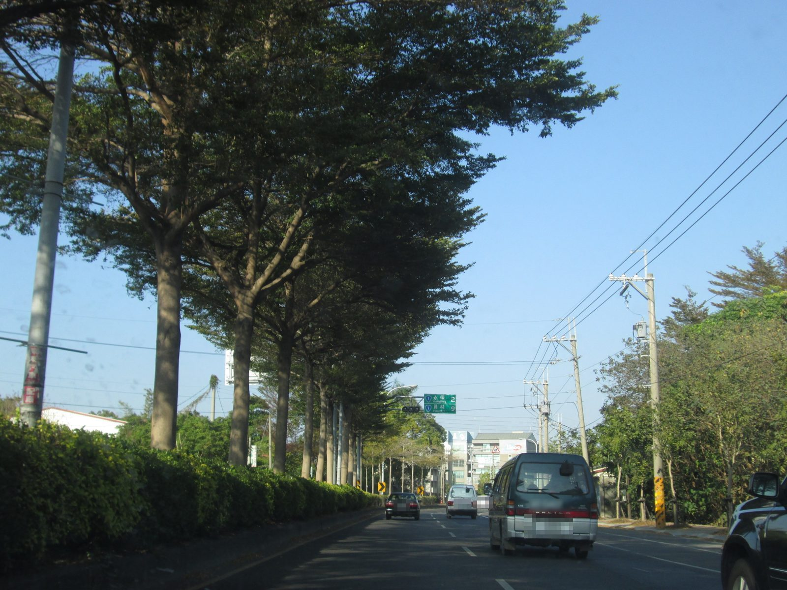
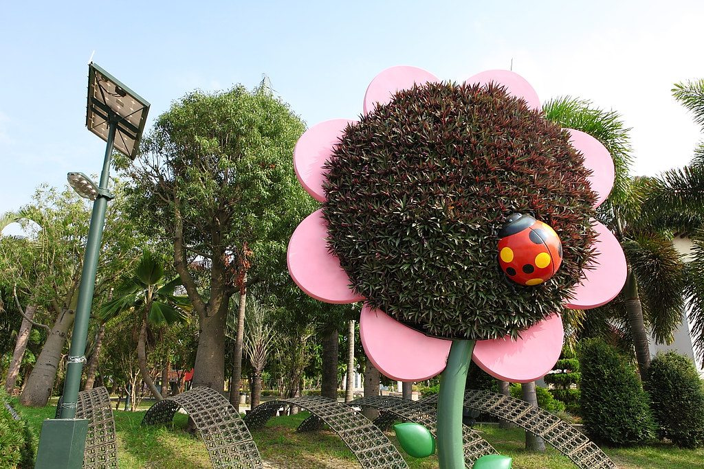
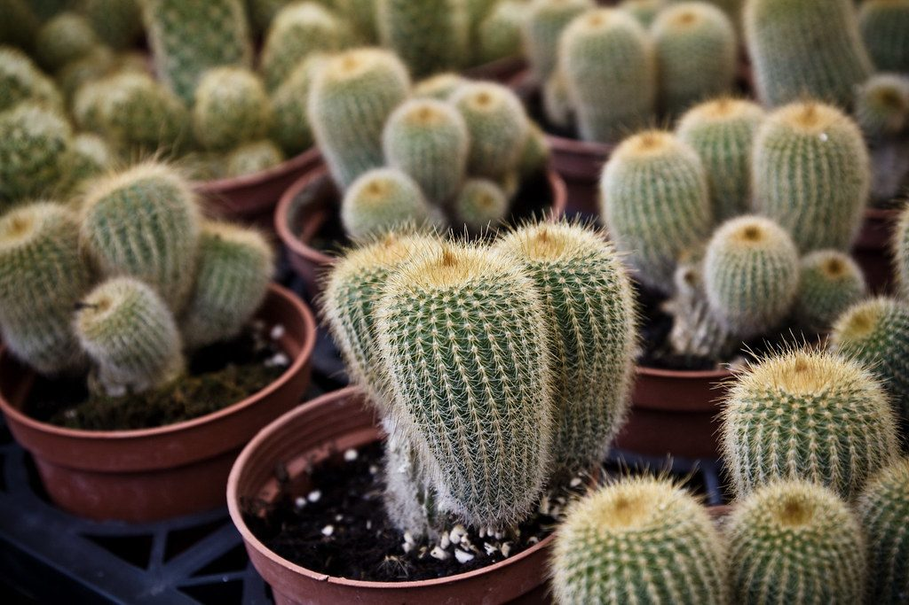
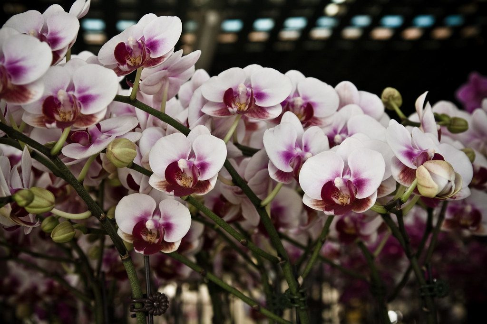
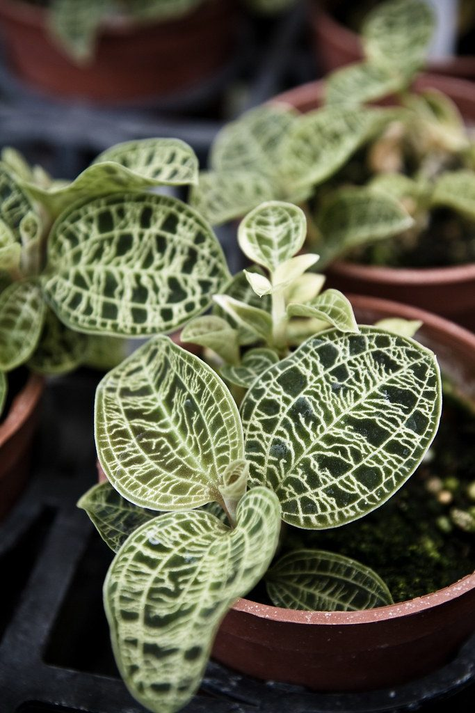
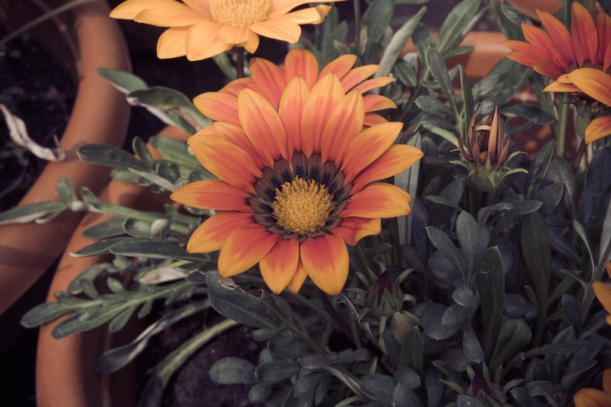
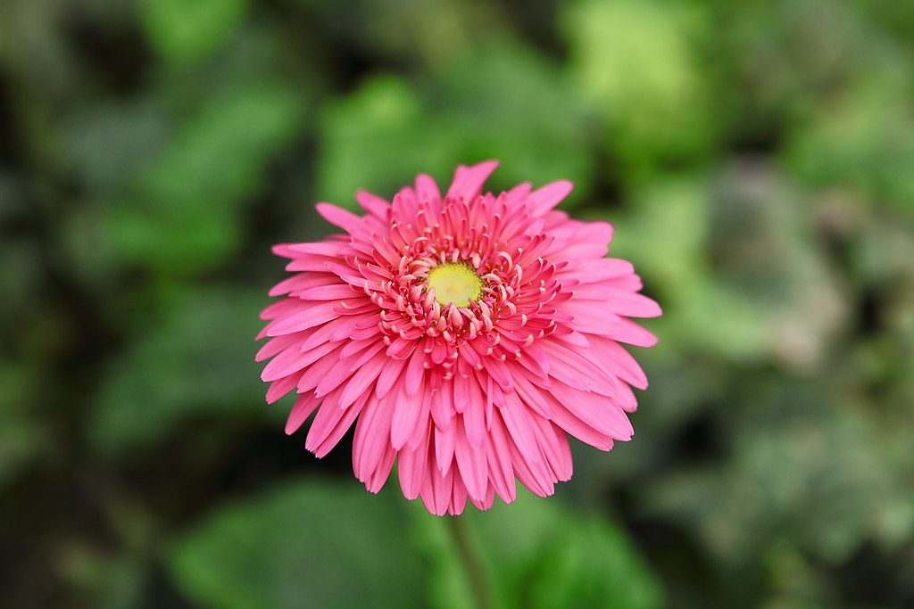
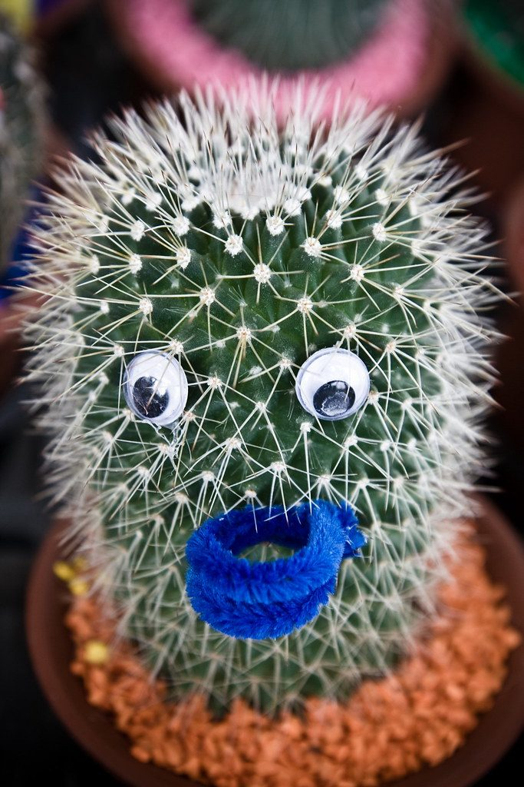

Tianwei — The Flower Town of Taiwan
田尾鄉位在彰化縣南邊，北邊是永靖、南邊是北斗。清朝時，漢人移民來這裡開墾，因為這裡位在濁水溪灌溉水圳的下游，是「田的尾端」，所以叫做「田尾」。
這裡的土壤肥沃、水源充足，很適合種植物。1973 年開闢了「公路花園」，現在是全臺灣最大的花卉、苗木、盆栽集散地，大家都叫它「花的故鄉」。

每張卡片都有英文小教室，可依年級切換難度 · Pick your English level below
公路花園入口旁的共融公園，有磨石子溜滑梯、攀爬球架、沙坑和鞦韆，全天開放。
國聖宮祭祀鄭成功，歷史可追溯到清朝道光年間；海豐崙的沛霖宮祭祀三山國王，是客家移民的信仰中心。
縱貫全臺的台1線省道從田尾中間穿過，從公路花園出發，騎單車就能逛遍花鄉。
在田尾，一年四季都有花開 · Something is blooming in every season







點一下單字就能聽發音 · Tap a word to hear it
答對了嗎？ · 0 / 0